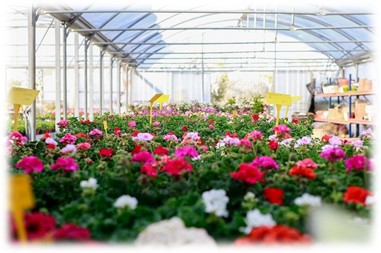
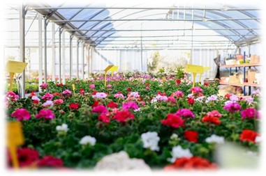

.png)
Vivero Fanny Lu
Es un pequeño vivero que prestará el mejor servicio de entregando los mejores productos, al mejor precio y de excelente calidad con flores y accesorios de temporada, con objetivo del vivero es demostrar la factibilidad económica y financiera y la puesta en marcha de esta idea a través de la entrega de un producto económico que vaya más allá de la entrega de flores, brindando un Excelente servicio.
.El vivero ofrece agradable variedad de hermosas flores como lirios, cactus y suculentas, para decorar especialmente oficinas, salones y otros eventos y que requieren una agradable satisfacción a los cliente.
.png)
Te Ofrecemos
- Atencion cliente
- Variedada de Flores
- Variedad de Abonos y Masetas
- Localizacion
- Contacto
- Promociones
 

Mision y Vision
Misión: “Transmitir la simpatía y elegancia de los clientes y el mejor y más delicado ambiente, a través del vivero con impresiones capaces de ofrecer una imagen diferente, con el más alto servicio y con la entrega en el menor tiempo posible”.
Visión: Tener las ventas más altas y ser líder en el Vivero en la ciudad Carrillos Alto de Poas en cinco años.
+5066302907

viveroFannylu@gmail.com
Nuestra ubicacion